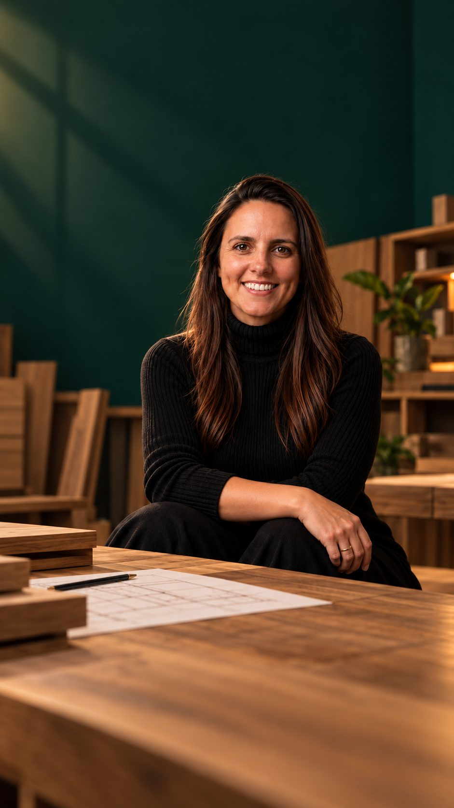

Preencha o formulário
Responda algumas perguntas sobre sua marcenaria e os desafios que enfrenta hoje.

Método Yuka · Gestão para marcenarias
Responda algumas perguntas sobre sua marcenaria e agende uma conversa individual e gratuita comigo para entendermos os desafios do seu negócio.
Thabata AndradeSócia da Yucca Móveis por 8 anos · Criadora do Método Yuka
Assista ao vídeo e entenda por que muitas marcenarias vendem, trabalham e entregam, mas continuam sem clareza sobre o resultado do negócio.
Entenda, em poucos minutos, por que muitas marcenarias trabalham muito, mas continuam sem clareza de lucro.
Se você se identificou, vale entender o que está acontecendo antes de continuar fazendo tudo do mesmo jeito.
Três passos para começarmos a entender a realidade da sua marcenaria.
Responda algumas perguntas sobre sua marcenaria e os desafios que enfrenta hoje.
Após enviar suas respostas, escolha um dia e horário disponível para nossa conversa.
Em uma conversa individual por Google Meet, vamos entender sua realidade e avaliar os próximos passos.
Não é uma aula de marcenaria, corte de MDF ou projeto de móveis. É uma conversa sobre o funcionamento do seu negócio.
Fui sócia e estive à frente da Yucca Móveis por oito anos.
Nesse período, vivi de perto os desafios de vender, fazer orçamentos, organizar a produção, cumprir prazos, acompanhar montagens, lidar com equipes e garantir que a empresa tivesse resultado.
Hoje, à frente do Método Yuka, uso essa experiência para ajudar outros donos de marcenaria a entender melhor o que acontece no próprio negócio e tomar decisões com mais segurança.
Vamos entender o porquê? Preencha o formulário gratuito para que eu conheça sua realidade e possamos iniciar uma conversa sobre os desafios do negócio.